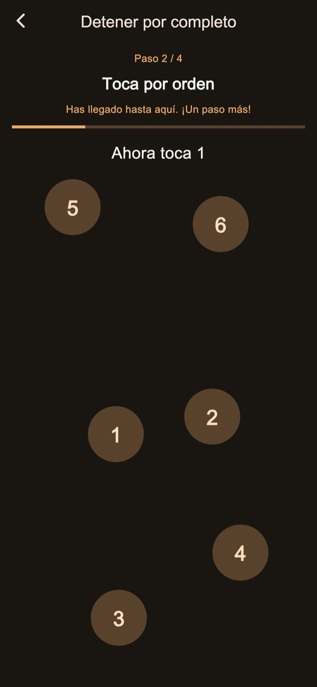
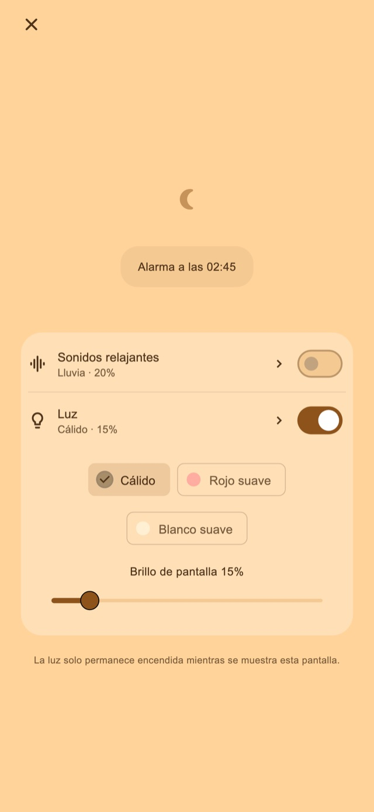

Sonidos relajantes
Escucha lluvia, olas o ruido blanco. El sonido empieza solo al activarlo y se desvanece antes de la primera alarma.
Alarma vibratoria para siestas y para después de acostar a tu hijo
Para quienes alargan la siesta o se duermen al acostar a sus hijos.
01Patrones de vibración
La duración y el ritmo cambian para sentirse distintos de tus notificaciones habituales. Esa sensación poco familiar busca ayudarte a notar la alarma y despertar.
Pulsos cortos, largos y en ráfagas. Elige entre cuatro modos básicos: aleatorio, estilo notificación, principalmente largos o principalmente cortos. Las variaciones de duración e intervalo aportan cambios de ritmo. Puedes probarlos antes de activar la alarma.
Patrones de vibración
02Varios avisos
Puedes parar solo el aviso actual o terminar el conjunto para cancelar los que quedan.
Guardar la cantidad y el intervalo es una función Premium.
Varios avisos
Termina al levantarte
03Tareas para parar
Resuelve cálculos, toca números en orden, mantén pulsado o toca repetidamente para completar la parada o posposición. Las tareas estándar están incluidas; editar y combinar los pasos requiere Premium.

Pantalla nocturna
Ajusta el brillo y la apariencia del reloj. También puedes ocultar la pantalla tras un rato sin tocarla y volver a mostrar el reloj y los controles con un toque.
Elige una duración, como 30 minutos, o una hora para despertar.
Espera con la pantalla nocturna abierta; activa sonido o luz si quieres.
Completa la parada y termina el conjunto cuando te hayas levantado.
Sonidos relajantes y luz a tu gusto
Para la siesta o para acostar a tu hijo. Actívalos desde la pantalla nocturna cuando los necesites.
Escucha lluvia, olas o ruido blanco. El sonido empieza solo al activarlo y se desvanece antes de la primera alarma.
Elige luz cálida, rojo suave o blanco suave y ajusta el brillo.
Funciones básicas gratuitas

Gratis / Premium
Incluye cuatro modos de vibración, parada y posposición estándar, pantalla nocturna, sonidos y luz. Algunas pantallas muestran anuncios.
| Función | Gratis | Premium |
|---|---|---|
| Patrones de vibración | ✓ | ✓ |
| Varios avisos | Ajustes estándar | Personalizable |
| Tareas para parar | Ajustes estándar | Personalizable |
| Pantalla nocturna / Sonidos relajantes / Luz | ✓ | ✓ |
| Crea y edita tus propios patrones de vibración. | — | ✓ |
| Elimina todos los anuncios. | — | ✓ |
Puedes elegir un plan mensual o una compra única. El plan mensual se renueva automáticamente y se gestiona o cancela en la configuración de tu cuenta de la tienda. Consulta los precios y condiciones antes de comprar.
Preguntas frecuentes
Para utilizar los patrones de vibración propios de la app, deja abierta la pantalla nocturna tras configurar la alarma. Si bloqueas con el botón lateral o cambias de app, iOS controla la vibración y no se aplica tu patrón ni intensidad personalizados. Revisa los permisos y ajustes de vibración y realiza la prueba de funcionamiento antes de usarla.
Escucha lluvia, olas o ruido blanco. El sonido empieza solo al activarlo y se desvanece antes de la primera alarma. Elige luz cálida, rojo suave o blanco suave y ajusta el brillo.
Incluye cuatro modos de vibración, parada y posposición estándar, pantalla nocturna, sonidos y luz. Algunas pantallas muestran anuncios. Elimina todos los anuncios. Ajusta la cantidad de avisos y el intervalo. Edita los pasos de parada y posposición. Crea y edita tus propios patrones de vibración. Puedes elegir un plan mensual o una compra única. El plan mensual se renueva automáticamente y se gestiona o cancela en la configuración de tu cuenta de la tienda. Consulta los precios y condiciones antes de comprar.
Descargar
Alarma vibratoria para siestas y para después de acostar a tu hijo
Funciones básicas gratuitas
iPhone: iOS 26.1+ / Android: 8.0+